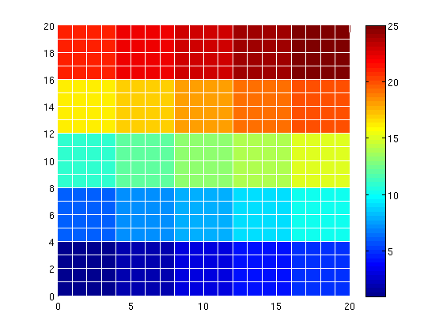
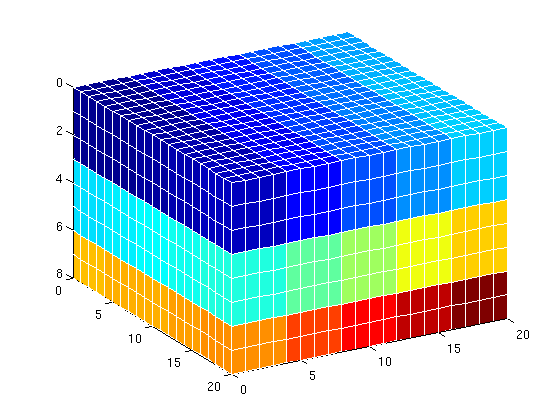
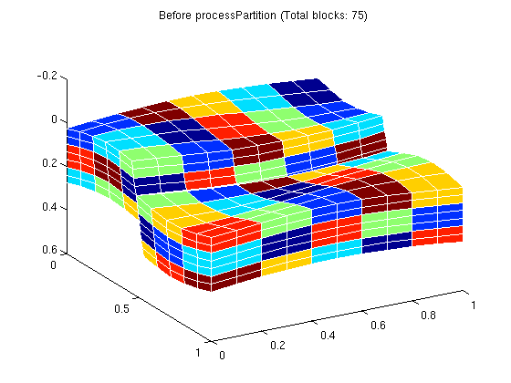
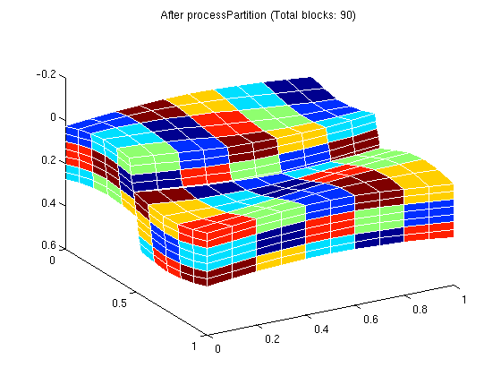
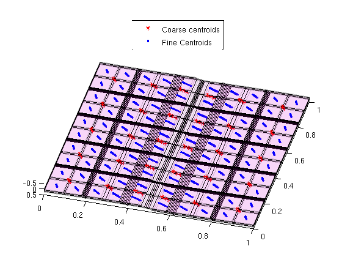
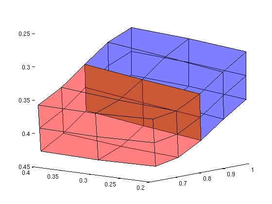
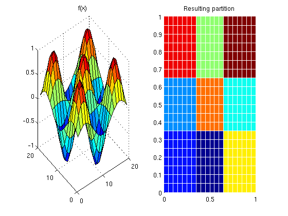
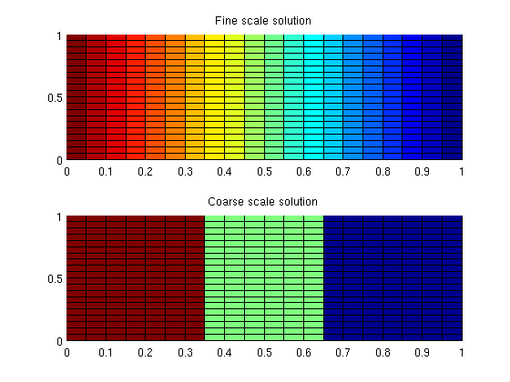

Contents
require coarsegrid
Partition a Cartesian 2D grid
We use partitionUI which exploits the logical structure and creates a uniform grid in logical space.
clf; G = cartGrid([20,20]); p = partitionUI(G, [5,5]); plotCellData(G, p, 'EdgeColor', 'w'); colorbar
Partition a 3D grid in much the same manner
G = cartGrid([20,20,8]); p = partitionUI(G, [5,5,3]); clf plotCellData(G, p, 'Edgecolor', 'w') view(60,30);
Create a faulted grid and partition it
We create a grid and partition it logically in ij-space and along specific layers along the k-space.
grdecl = simpleGrdecl([10 10 7], .15); G = processGRDECL(grdecl); % Layer 1 will go from 1 to 3 - 1, layer 2 from 3 to 6 - 1 and so on L = [1 3 6 8]; % We can easily find the thickness of the layers diff(L) %#ok intentional display % The partition is disconnected across the fault. processPartition can % amend this by adding new coarse blocks. p_initial = partitionLayers(G, [5,5], L); p = processPartition(G, p_initial); figure(1); clf plotCellData(G, mod(p_initial, 7), 'Edgecolor', 'w') title(['Before processPartition (Total blocks: ' num2str(numel(unique(p_initial))) ')']) view(60,30); figure(2); clf plotCellData(G, mod(p, 7), 'Edgecolor', 'w') title(['After processPartition (Total blocks: ' num2str(numel(unique(p))) ')']) view(60,30);
ans =
2 3 2
  Geometry information can be added to a coarse grid
By calling coarsenGeometry on a grid which has been returned from processGeometry, we can get coarse centroids, volumes and so on.
G = computeGeometry(G); CG = generateCoarseGrid(G, p); CG = coarsenGeometry(CG); clf cg_cent = CG.cells.centroids; g_cent = G.cells.centroids; hold on; plotPts = @(pts, varargin) plot3(pts(:,1), pts(:,2), pts(:,3), varargin{:}); plotPts(cg_cent, '*r'); plotPts(g_cent, '.') plotGrid(G, 'FaceColor', 'none', 'EdgeAlpha', .1) outlineCoarseGrid(G, p, 'facealpha', .1); hold off view(15,85); % axis tight off legend({'Coarse centroids', 'Fine Centroids'}, 'Location', 'NorthOutside')
The coarse grid contains maps to fine scale
%The coarse grid also contains lookup tables for mapping the coarse grid to %fine scales. Here we visualize a single coarse face consisting of several %fine faces along with its neighbors in red and blue respectively on the %fine grid. i = 300; sub = CG.faces.connPos(i):CG.faces.connPos(i+1)-1; finefaces = CG.faces.fconn(sub); neighbors = CG.faces.neighbors(i,:); clf plotFaces(G, finefaces) plotGrid(G, p == neighbors(1), 'facec', 'red', 'facea', .3) plotGrid(G, p == neighbors(2), 'facec', 'blue', 'facea', .3) view(-50, 10)
No need for logical indices
The partition vector is just that - a vector with one entry for each fine cell containing the partition the cell belongs to. We can generate an arbitrary coarse grid without using any information relating to a structured grid.
For instance, if we want to partition a grid uniformly in space based on cell coordinates, the product of two periodic functions will do nicely. We divide the grid into a 3x3 coarse grid in this way by exploiting that the sine function changes sign in intervals of pi.
nx = 3; ny = 3; G = cartGrid([20, 20], [1 1]); G = computeGeometry(G); % First create the periodic function f = @(v) sin(pi*nx*v(:,1)) .* sin(pi*ny*v(:,2)); % Evaluate it in the centroids fval = f( G.cells.centroids); % We divide the grid into two parts based on the sign of the function p = double(fval > 0) + 1; % Which is then postprocessed to create connected domains. p = processPartition(G, p); % This vector can generate coarse grids just as partitionUI did. CG = generateCoarseGrid(G, p); clf % Plot the function values subplot(1,2,1); v = reshape(f(G.cells.centroids), G.cartDims(1), G.cartDims(2)); surf(v) title('f(x)') subplot(1,2,2); % Plot the resulting partitions title('Resulting partition') plotCellData(G, mod(p, 13), 'EdgeColor', 'w');
Solvers using coarse grids
Some solvers may use the coarse grids. Utilities such as coarsenBC make it easier to solve problems at several scales.
% Trivial fluid fluid = initSingleFluid('mu', 1, 'rho', 1); % Uniform permeability and a pressure drop rock.perm = ones(G.cells.num, 1); T = computeTrans(G, rock); state = initState(G, [], 0); bc = pside([], G, 'left', 100*barsa); bc = pside(bc, G, 'right', 0*barsa); % Solve for fine scale state = incompTPFA(state, G, T, fluid, 'bc', bc); % Use the provided coarse grid CG = coarsenGeometry(CG); % Create the same trivial permeability. This could be replaced by for % example an upscaling routine from the upscaling module if the % permeability was non-uniform. rock.perm = ones(CG.cells.num, 1); T_coarse = computeTrans(CG, rock); state_coarse = initState(CG, [], 0); % Take the existing boundary condition and sample it in the coarse grid. bc_coarse = coarsenBC(CG, bc); state_coarse = incompTPFA(state_coarse, CG, T_coarse, fluid, 'bc', bc_coarse); % Plot the solutions subplot(2,1,1) plotCellData(G, state.pressure, 'edgec', 'k') title('Fine scale solution') subplot(2,1,2) plotCellData(G, state_coarse.pressure(p), 'edgec', 'k') title('Coarse scale solution')